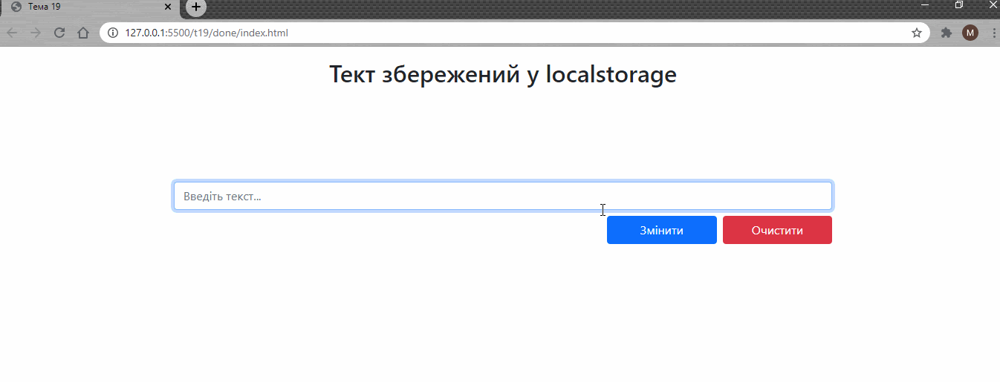
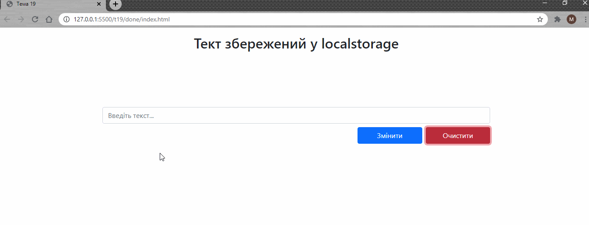

Тема 19.
1. Використайте готову верстку для завдання: index.html. Після введення тексту зберігайте його у localstorage. Виводьте оновлений текст на сторінку.

2. При кліку на кнопку очистити видаляйте весь текст.

3. При кліку на кнопку змінити додавайте весь текст із localstorage у поле для введення.